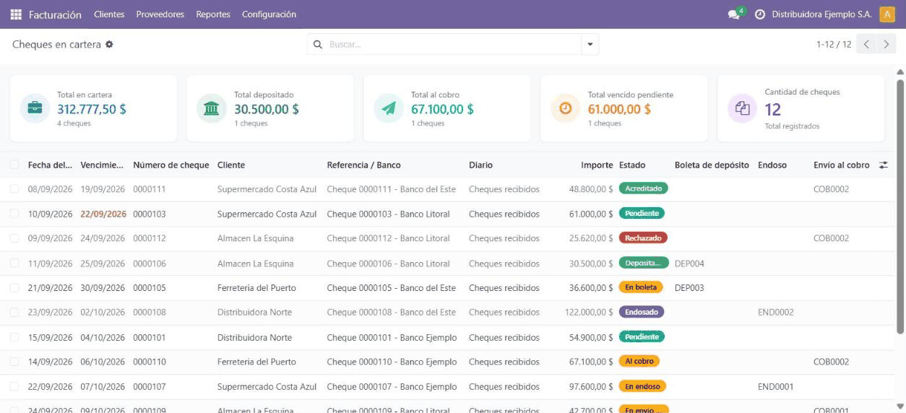
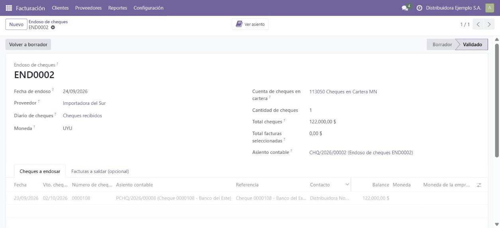
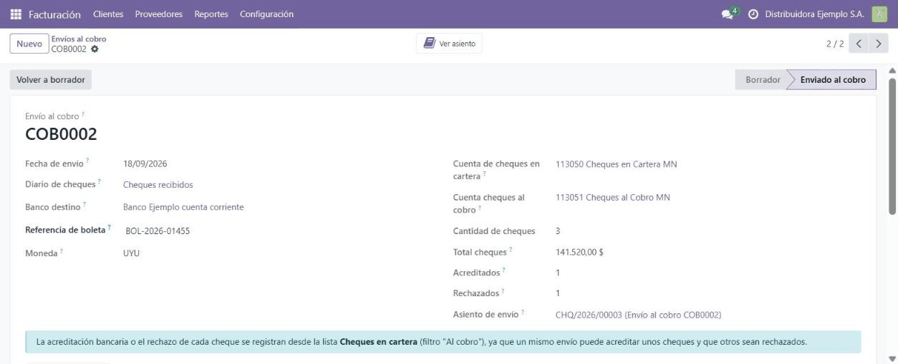

<section class="oe_container">
  <div class="oe_row oe_spaced" style="max-width:840px;margin:0 auto;padding:24px;font-family:Poppins,Arial,Helvetica,sans-serif">
    <div style="border-left:6px solid #0FA656;padding-left:18px;margin-bottom:18px">
      <h1 style="color:#1A252C;margin:0 0 6px;font-size:29px">Post-dated Check Wallet for Odoo</h1>
      <p style="color:#555;font-size:17px;margin:0;line-height:1.45">Every received check in a single view: what is in the wallet, how much it adds up to, when each check falls due and what was done with it (deposit, endorsement to a vendor or collection).</p>
    </div>
    <p style="margin:0 0 20px;color:#333;line-height:1.6;font-size:15px">If your company collects with post-dated checks, the daily question is always the same: which checks do I hold, how much do they add up to and which ones fall due this week? This module adds the <b>Checks in wallet</b> view to Odoo, a dashboard where every received check shows its amount, its due date and its state, from the moment it comes in with a collection until the bank credits it. No more check spreadsheet on the side of the system.</p>
<h2 style="color:#1A252C;font-size:21px;margin:26px 0 10px">What it does</h2>
<ul style="color:#333;line-height:1.7;font-size:15px;margin:0;padding-left:22px">
<li><b>One view of the whole check wallet</b>, with a dashboard of totals per state: pending, deposited, endorsed, at collection, credited and rejected.</li>
<li><b>Full life cycle of every check:</b> pending, in a deposit slip or deposited, in endorsement or endorsed, sent to collection, credited or rejected.</li>
<li><b>Endorsement of checks to vendors:</b> hand the check over as a payment to a vendor and reconcile their bills in the same step.</li>
<li><b>Collection through the bank:</b> handover with bridge accounts per currency and per-check resolution, one check at a time (credited or rejected).</li>
<li><b>Bank deposit</b> integrated with the deposit slip module of the Odoo community (OCA).</li>
<li><b>Daily automatic alert</b> listing the checks falling due today.</li>
<li><b>Journals flagged as check journals</b>, to keep this operation apart from the rest of the treasury.</li>
</ul>
<h2 style="color:#1A252C;font-size:21px;margin:26px 0 10px">The module on screen</h2>

<p style="margin:0 0 16px;color:#777;font-size:13px;line-height:1.45">Check wallet with totals per state / Cartera de cheques con totales por estado</p>

<p style="margin:0 0 16px;color:#777;font-size:13px;line-height:1.45">Endorsement of a check to a vendor / Endoso de un cheque a un proveedor</p>

<p style="margin:0 0 20px;color:#777;font-size:13px;line-height:1.45">Collection sent to the bank, with credited and rejected checks / Env&#237;o al cobro con cheques acreditados y rechazados</p>
<h2 style="color:#1A252C;font-size:21px;margin:26px 0 10px">Who it is for</h2>
<p style="margin:0 0 8px;color:#333;line-height:1.6;font-size:15px">For any company that collects with post-dated checks, common practice in Uruguay and across the region. Some typical cases:</p>
<ul style="color:#333;line-height:1.7;font-size:15px;margin:0;padding-left:22px">
<li>A <b>distributor or wholesaler</b> receiving dozens of checks a month at 30, 60 and 90 days, who needs to know how much is in the wallet and what falls due each week.</li>
<li>A company that <b>pays its vendors by endorsing</b> the checks of its own customers, and wants that endorsement to leave the vendor bills reconciled.</li>
<li>An administration keeping the checks <b>in a separate spreadsheet</b> and losing time cross-checking it against the accounting.</li>
</ul>
<h2 style="color:#1A252C;font-size:21px;margin:26px 0 10px">How it works</h2>
<ol style="color:#333;line-height:1.7;font-size:15px;margin:0;padding-left:22px">
<li>Register the collection with a check as usual: the number, the due date and the notes are kept on the payment.</li>
<li>The check shows up in the Checks in wallet view automatically, with its state and its due date.</li>
<li>Decide what to do with each check: deposit it, endorse it to a vendor or send it to collection.</li>
<li>The dashboard and the accounting stay aligned; if the bank rejects a check, it is resolved individually and recorded.</li>
</ol>
<h2 style="color:#1A252C;font-size:21px;margin:26px 0 10px">Frequently asked questions</h2>
<p style="margin:0 0 4px;color:#1A252C;font-size:15px"><b>Does it handle post-dated checks?</b></p><p style="margin:0 0 12px;color:#333;line-height:1.6;font-size:15px">Yes, that is its main use case: the view shows the due date of every check and a daily automatic alert reports the ones falling due that day.</p>
<p style="margin:0 0 4px;color:#1A252C;font-size:15px"><b>What happens if the bank rejects a check?</b></p><p style="margin:0 0 12px;color:#333;line-height:1.6;font-size:15px">Checks sent to collection are resolved one by one: each check is marked as credited or rejected and the matching journal entry is recorded against the bridge account of its currency.</p>
<p style="margin:0 0 4px;color:#1A252C;font-size:15px"><b>What do I need to install it?</b></p><p style="margin:0 0 12px;color:#333;line-height:1.6;font-size:15px">Two free modules: account_check_deposit, from the Odoo community (OCA), and Check Info on Payments and Journal Items, ours, published in this same repository.</p>
<p style="margin:0 0 4px;color:#1A252C;font-size:15px"><b>Is it available for other Odoo versions?</b></p><p style="margin:0 0 12px;color:#333;line-height:1.6;font-size:15px">We publish the module for the versions listed on this page. If your company runs another version, write to info@polpo.uy.</p>
<hr style="border:none;border-top:1px solid #DDE4E7;margin:26px 0"/>
<h2 style="color:#1A252C;font-size:23px;margin:0 0 6px">Cheques en Cartera para Odoo</h2>
<p style="color:#555;font-size:16px;margin:0 0 16px;line-height:1.45">Todos los cheques recibidos en una sola vista: qu&#233; hay en cartera, cu&#225;nto suma, cu&#225;ndo vence cada cheque y qu&#233; se hizo con cada uno (dep&#243;sito, endoso a un proveedor o env&#237;o al cobro).</p>
<p style="margin:0 0 20px;color:#333;line-height:1.6;font-size:15px">Si su empresa cobra con cheques diferidos, la pregunta de todos los d&#237;as es la misma: &#191;qu&#233; cheques tengo, cu&#225;nto suman y cu&#225;les vencen esta semana? Este m&#243;dulo agrega a Odoo la vista <b>Cheques en cartera</b>, un tablero donde cada cheque recibido aparece con su importe, su vencimiento y su estado, desde que entra por un cobro hasta que se acredita en el banco. Se termina la planilla de cheques al costado del sistema.</p>
<h3 style="color:#1A252C;font-size:19px;margin:22px 0 10px">Qu&#233; hace</h3>
<ul style="color:#333;line-height:1.7;font-size:15px;margin:0;padding-left:22px">
<li><b>Vista &#250;nica de la cartera de cheques</b> con tablero de totales por estado: pendientes, depositados, endosados, al cobro, acreditados y rechazados.</li>
<li><b>Ciclo de vida completo de cada cheque:</b> pendiente, en boleta de dep&#243;sito o depositado, en endoso o endosado, enviado al cobro, acreditado o rechazado.</li>
<li><b>Endoso de cheques a proveedores:</b> entrega el cheque como pago a un proveedor y concilia sus facturas en el mismo paso.</li>
<li><b>Env&#237;o de cheques al cobro:</b> entrega al banco con cuentas puente por moneda y resoluci&#243;n individual, cheque por cheque (acreditado o rechazado).</li>
<li><b>Dep&#243;sito bancario</b> integrado con el m&#243;dulo de boletas de dep&#243;sito de la comunidad Odoo (OCA).</li>
<li><b>Aviso autom&#225;tico diario</b> con los cheques que vencen en el d&#237;a.</li>
<li><b>Diarios marcados como "de cheques"</b>, para separar esta operativa del resto de la tesorer&#237;a.</li>
</ul>
<h3 style="color:#1A252C;font-size:19px;margin:22px 0 10px">Para qui&#233;n es</h3>
<p style="margin:0 0 8px;color:#333;line-height:1.6;font-size:15px">Para cualquier empresa que cobre con cheques diferidos, una pr&#225;ctica habitual en Uruguay y en toda la regi&#243;n. Algunos casos t&#237;picos:</p>
<ul style="color:#333;line-height:1.7;font-size:15px;margin:0;padding-left:22px">
<li>Una <b>distribuidora o mayorista</b> que recibe decenas de cheques por mes a 30, 60 y 90 d&#237;as y necesita saber cu&#225;nto tiene en cartera y qu&#233; vence cada semana.</li>
<li>Una empresa que <b>paga a sus proveedores endosando</b> los cheques de sus clientes, y quiere que ese endoso deje conciliadas las facturas del proveedor.</li>
<li>Una administraci&#243;n que hoy lleva los cheques <b>en una planilla aparte</b> y pierde tiempo cruz&#225;ndola contra la contabilidad.</li>
</ul>
<h3 style="color:#1A252C;font-size:19px;margin:22px 0 10px">C&#243;mo funciona</h3>
<ol style="color:#333;line-height:1.7;font-size:15px;margin:0;padding-left:22px">
<li>Registre el cobro con cheque como siempre: el n&#250;mero, el vencimiento y las observaciones quedan guardados en el pago.</li>
<li>El cheque aparece autom&#225;ticamente en la vista Cheques en cartera, con su estado y su vencimiento.</li>
<li>Decida el destino de cada cheque: depositarlo, endosarlo a un proveedor o enviarlo al cobro.</li>
<li>El tablero y la contabilidad quedan siempre alineados; si el banco rechaza un cheque, se resuelve individualmente y queda registrado.</li>
</ol>
<h3 style="color:#1A252C;font-size:19px;margin:22px 0 10px">Preguntas frecuentes</h3>
<p style="margin:0 0 4px;color:#1A252C;font-size:15px"><b>&#191;Sirve para cheques diferidos?</b></p><p style="margin:0 0 12px;color:#333;line-height:1.6;font-size:15px">S&#237;, es su caso de uso principal: la vista muestra el vencimiento de cada cheque y un aviso autom&#225;tico diario informa los que vencen ese d&#237;a.</p>
<p style="margin:0 0 4px;color:#1A252C;font-size:15px"><b>&#191;Qu&#233; pasa si el banco rechaza un cheque?</b></p><p style="margin:0 0 12px;color:#333;line-height:1.6;font-size:15px">Los cheques enviados al cobro se resuelven uno por uno: cada cheque se marca como acreditado o rechazado y el asiento correspondiente queda registrado sobre la cuenta puente de su moneda.</p>
<p style="margin:0 0 4px;color:#1A252C;font-size:15px"><b>&#191;Qu&#233; necesito para instalarlo?</b></p><p style="margin:0 0 12px;color:#333;line-height:1.6;font-size:15px">Dos m&#243;dulos gratuitos: account_check_deposit, de la comunidad Odoo (OCA), y Cheque Info en Pagos y Apuntes, nuestro, publicado en este mismo repositorio.</p>
<p style="margin:0 0 4px;color:#1A252C;font-size:15px"><b>&#191;Est&#225; disponible para otras versiones de Odoo?</b></p><p style="margin:0 0 12px;color:#333;line-height:1.6;font-size:15px">Publicamos el m&#243;dulo para las versiones listadas en esta ficha. Si su empresa usa otra versi&#243;n, escr&#237;banos a info@polpo.uy.</p>
<div style="background:#E9F7F0;border:1px solid #DDE4E7;border-radius:12px;padding:20px 22px;margin:28px 0 0">
      <h2 style="color:#1A252C;font-size:19px;margin:0 0 8px">Interested in this module?</h2>
      <p style="margin:0 0 10px;color:#333;line-height:1.6;font-size:15px">If you need it for another Odoo version, found a bug, or want to know more about us and our implementations, write to <a href="mailto:info@polpo.uy" style="color:#0FA656;text-decoration:none"><b>info@polpo.uy</b></a>, leave your question in our <a href="https://polpo.uy/contactus?utm_source=odoo_apps&amp;utm_medium=referral&amp;utm_campaign=qapps_check_wallet" style="color:#0FA656;text-decoration:none"><b>contact form</b></a> or see what we do at <a href="https://polpo.uy/?utm_source=odoo_apps&amp;utm_medium=referral&amp;utm_campaign=qapps_check_wallet" style="color:#0FA656;text-decoration:none"><b>polpo.uy</b></a>.</p>
      <p style="margin:0;color:#4a5a52;line-height:1.55;font-size:13px"><i>Si lo necesita en otra versi&#243;n de Odoo, encontr&#243; un error o quiere saber m&#225;s sobre nosotros, escr&#237;banos a info@polpo.uy o use nuestro formulario de contacto.</i></p>
    </div>
<hr style="border:none;border-top:1px solid #DDE4E7;margin:26px 0"/>
    <p style="color:#888;font-size:13px;margin:0">Developed by <a href="https://polpo.uy" style="color:#0FA656;text-decoration:none">Polpo ERP</a>, Odoo implementers from Uruguay for the whole region. Support: info@polpo.uy</p>
  </div>
</section>
